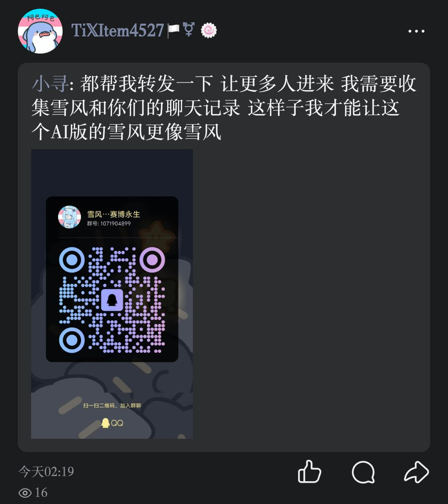

穗_🌾
@Sui_aini
请停止这种行为，这种行为只是为了满足你们的个人需求，你们并没有真正了解逝者的过往、逝者的经历、逝者的生活、逝者的一切，你们只是想要创造出一个你们想象的雪风，你们是有多么的恨她，才会做出这样的行为。可以纪念，可以怀念，可以哭泣，可以思念她，可以时不时翻开聊天记录，可以时不时翻开她的推文，但不能这样做，这种行为只是为了满足你们的私欲，请尊重一下逝者吧，也请尊重一下还活着的，有自己的思想，有自己的人生观，不随波逐流的人吧

TixItem4527🏳️⚧🍥
@TixItem4527
来帮助提供雪风姐姐的聊天记录进行赛博重塑吧 https://t.co/cnyJv20Kre